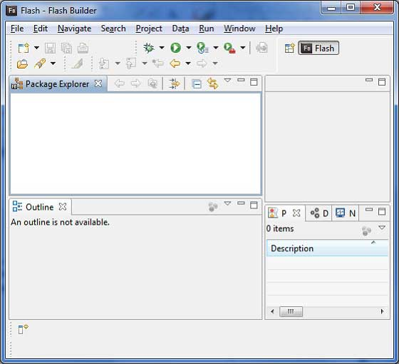
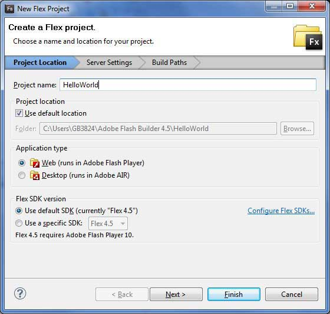
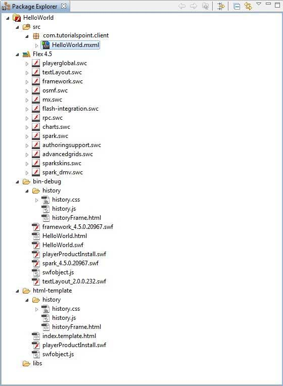
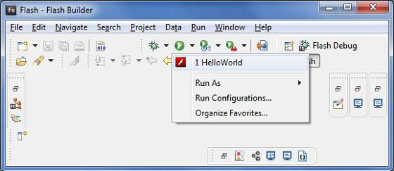
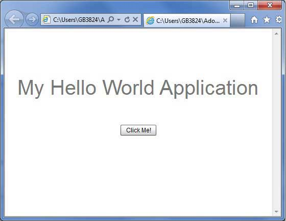
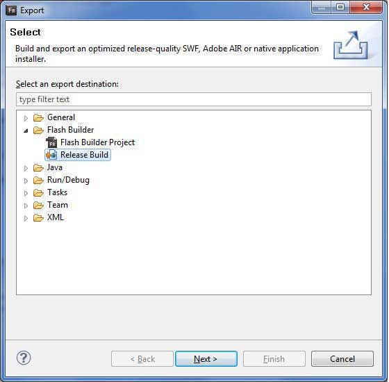
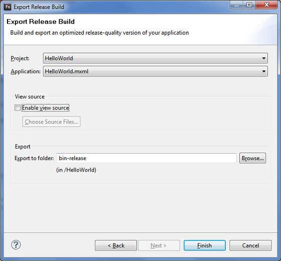
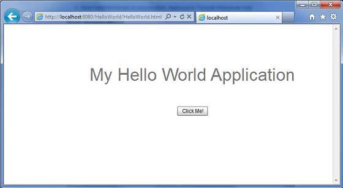

Flex Quick Guide
Flex - Overview
What is Flex?
Flex is a powerful, open source application framework which allows to build traditional applications for browser, mobile and desktop using the same programming model, tool, and codebase.
Flex provides FLEX SDK consisting of the Flex class library (ActionScript classes), the Flex compilers, the debugger, the MXML and ActionScript programming languages, and other utilities to build expressive and interactive rich internet applications (RIA)
Flex takes care of the user interface (UI) or the client-side functionality of a web application. Server-side functionality dependent on server-side components written in a traditional scripting language (Java/ PHP etc.)
A Flex based application actually delivered as a SWF file and it closely resembles the HTML / Javascript portion of a traditional web application.
Flex application is deployed as SWF file(s) plus an HTML wrapper, the CSS file(s) and any server-side script files (i.e. Java, .CFM, .PHP, etc) to the server. Like traditional web applications
These resources are delivered from the server to the client browser using the customary HTTP request / response fashion and Flash Player run the application in the browser.
Advantages of Flex
Flex applications being Flash Player based can access device capabilities like GPS, camera, local database, graphics accelerometer.
Flex applications can run on Andriod, BlackBerry Tablet OS, iOS devices.
Flex applications can run on Browsers as well as on Desktop.
Flex applications are platform independent. UI can be native to platform or can be made same on each platform.
Flex applications can interact with server with all major server side technologies like Java, Spring, Hibernate, PHP, Ruby, .NET, Adobe ColdFusion, and SAP using industry standards such as REST, SOAP, JSON, JMS, and AMF.
Flex Applications developed assures Rich User Experience through intuitive interaction with the application and presenting information in a visually richer interface.
Flex application is a single page application where states can can transition from one state to other state without having to fetch a new page from the server or to refresh the browser.
Flex application reduces the load on the server to great extent because it is only required return the application once, rather than a new page every time when the user changes views.
Disadvantages of Flex
Flex applications are single threaded applications but Flex provides an asynchronous programming model to mitigate this concern.
Flex is actionscript and XML based. Learning of these two is a must to work in Flex.
Flex - Environment Setup
Let us learn how to prepare a development environment to start your work with Adobe Flex Framework. This tutorial will also teach you how to setup JDK and Adobe Flash Builder on your machine before you setup Flex Framework:
System Requirement
FLEX requires JDK 1.4 or higher so the very first requirement is to have JDK installed in your machine.
| JDK | 1.4 or above. |
|---|---|
| Memory | no minimum requirement. |
| Disk Space | no minimum requirement. |
| Operating System | no minimum requirement. |
Follow the given steps to setup your environment to start with Flex application development.
Step 1 - Verify Java installation on your machine
Now open console and execute the following java command.
| OS | Task | Command |
|---|---|---|
| Windows | Open Command Console | c:\> java -version |
| Linux | Open Command Terminal | $ java -version |
| Mac | Open Terminal | machine:~ joseph$ java -version |
Let's verify the output for all the operating systems:
| OS | Generated Output |
|---|---|
| Windows |
java version "1.6.0_21" Java(TM) SE Runtime Environment (build 1.6.0_21-b07) Java HotSpot(TM) Client VM (build 17.0-b17, mixed mode, sharing) |
| Linux |
java version "1.6.0_21" Java(TM) SE Runtime Environment (build 1.6.0_21-b07) Java HotSpot(TM) Client VM (build 17.0-b17, mixed mode, sharing) |
| Mac |
java version "1.6.0_21" Java(TM) SE Runtime Environment (build 1.6.0_21-b07) Java HotSpot(TM)64-Bit Server VM (build 17.0-b17, mixed mode, sharing) |
Step 2 - Setup Java Development Kit (JDK):
If you do not have Java installed then you can install the Java Software Development Kit (SDK) from Oracle's Java site: Java SE Downloads. You will find instructions for installing JDK in downloaded files, follow the given instructions to install and configure the setup. Finally set PATH and JAVA_HOME environment variables to refer to the directory that contains java and javac, typically java_install_dir/bin and java_install_dir respectively.
Set the JAVA_HOME environment variable to point to the base directory location where Java is installed on your machine. For example
| OS | Output |
|---|---|
| Windows | Set the environment variable JAVA_HOME to C:\Program Files\Java\jdk1.6.0_21 |
| Linux | export JAVA_HOME=/usr/local/java-current |
| Mac | export JAVA_HOME=/Library/Java/Home |
Append Java compiler location to System Path.
| OS | Output |
|---|---|
| Windows | Append the string ;%JAVA_HOME%\bin to the end of the system variable, Path. |
| Linux | export PATH=$PATH:$JAVA_HOME/bin/ |
| Mac | not required |
Step 3 - Setup Adobe Flash Builder 4.5
All the examples in this tutorial have been written using Adobe Flash Builder 4.5 Profession IDE Trial Version. So I would suggest you should have latest version of Adobe Flash Builder installed on your machine based on your operating system.
To install Adobe Flash Builder IDE, download the latest Adobe Flash Builder binaries from http://www.adobe.com/in/products/flash-builder.html. Once you downloaded the installation, unpack the binary distribution into a convenient location. For example in C:\flash-builder on windows, or /usr/local/flash-builder on Linux/Unix and finally set PATH variable appropriately.
Flash Builder can be started by executing the following commands on windows machine, or you can simply double click on FlashBuilder.exe
%C:\flash-builder\FlashBuilder.exe
Flash Builder can be started by executing the following commands on Unix (Solaris, Linux, etc.) machine:
$/usr/local/flash-builder/FlashBuilder
Adobe Flash Builder Trial Version can be used for 60 days. Just accept the terms and conditions and skip the initial registration steps and continue with the IDE. We're using the trial version for teaching purpose.
After a successful startup, if everything is fine then it should display following result:
Adobe Flash Builder comes pre-configured with FLEX SDKs. We're using FLEX SDK 4.5 in our examples which comes bundled with Adobe Flash Builder 4.5.
Step 4: Setup Apache Tomcat:
You can download the latest version of Tomcat from http://tomcat.apache.org/. Once you downloaded the installation, unpack the binary distribution into a convenient location. For example in C:\apache-tomcat-6.0.33 on windows, or /usr/local/apache-tomcat-6.0.33 on Linux/Unix and set CATALINA_HOME environment variable pointing to the installation locations.
Tomcat can be started by executing the following commands on windows machine, or you can simply double click on startup.bat
%CATALINA_HOME%\bin\startup.bat or C:\apache-tomcat-6.0.33\bin\startup.bat
Tomcat can be started by executing the following commands on Unix (Solaris, Linux, etc.) machine:
$CATALINA_HOME/bin/startup.sh or /usr/local/apache-tomcat-6.0.33/bin/startup.sh
After a successful startup, the default web applications included with Tomcat will be available by visiting http://localhost:8080/. If everything is fine then it should display following result:

Further information about configuring and running Tomcat can be found in the documentation included here, as well as on the Tomcat web site: http://tomcat.apache.org
Tomcat can be stopped by executing the following commands on windows machine:
%CATALINA_HOME%\bin\shutdown or C:\apache-tomcat-5.5.29\bin\shutdown
Tomcat can be stopped by executing the following commands on Unix (Solaris, Linux, etc.) machine:
$CATALINA_HOME/bin/shutdown.sh or /usr/local/apache-tomcat-5.5.29/bin/shutdown.sh
Flex - Applications
Before we start with creating actual HelloWorld application using Flash Builder, let us see what are the actual parts of a Flex application. A Flex application consists of following four important parts out of which last part is optional but first three parts are mandatory:
Flex Framework Libraries
Client-side code
Public Resources (HTML/JS/CSS)
Server-side code
Sample locations of different parts of a typical Flex application HelloWord will be as shown below:
| Name | Location |
|---|---|
| Project root | HelloWorld/ |
| Flex Framework Libraries | Build Path |
| Public resources | html-template |
| Client-side code | src/com/tutorialspoint/client |
| Server-side code | src/com/tutorialspoint/server |
Application Build Process
Flex application required Flex Framework libraries. Flash Builder automatically add the libraries to build path.
When we build our code using Flash Builder, Flash builder will do the following tasks
Compiles the source code to HelloWorld.swf file.
Compiles a HelloWorld.html (a wrapper file for swf file) from a file index.template.html stored in html-template folder
Copies HelloWorld.swf and HelloWorld.html files in target folder, bin-debug.
Copies swfobject.js, a javascript code responsible to load swf file dynamically in HelloWorld.html in target folder, bin-debug
Copies framework libraries in form of swf file named frameworks_xxx.swf in target folder, bin-debug
Copies other flex modules (.swf files such as sparkskins_xxx.swf,textLayout_xxx.swf) in target folder.
Application Launch Process
Open the HelloWorld.html file available in \HelloWorld\bin-debug folder in any web-browser.
HelloWorld.swf will load automatically and application will start running.
Flex Framework Libraries
Following is the brief detail about few important framework libraries.
In flex libraries are denoted using .swc notation
| S.N. | Nodes & Description |
|---|---|
| 1 | playerglobal.swc This library is specific to FlashPlayer installed on your machine and contains native methods supported by flash player. |
| 2 | textlayout.swc This library supports the text layout related features. |
| 3 | framework.swc This is the flex framework library contains the core features of Flex. |
| 4 | mx.swc This library stores the definations of mx UI controls. |
| 5 | charts.swc This library supports the charting controls. |
| 6 | spark.swc This library stores the definations of spark UI controls. |
| 7 | sparkskins.swc This library supports the skinning of spark UI controls. |
Client-side code
Flex application code can be written in MXML and ActionScript.| S.N. | Type & Description |
|---|---|
| 1 | MXML MXML is an XML markup language that we'll use to lay out user interface components.MXML is compiled into ActionScript during build process. |
| 2 | ActionScript ActionScript is an object-oriented procedural programming language and is based on the ECMAScript (ECMA-262) edition 4 draft language specification. |
Lay out user interface components using MXML tags
Use MXML to declaratively define nonvisual aspects of an application, such as access to data sources on the server
Use MXML to create data bindings between user interface components and data sources on the server.
Use ActionScript to define event listeners inside MXML event attributes.
Add script blocks using the <mx:Script> tag.
Include external ActionScript files.
Import ActionScript classes.
Create ActionScript components.
Public resources
These are helper files referenced by Flex application, such as Host HTML page, CSS or images located under html-template folder.It contains following files
| S.N. | File Name & Description |
|---|---|
| 1 | index.template.html Host HTML page, with place holders. Flash Builder uses this template to build actual page HelloWorld.html with HelloWorld.swf file. |
| 2 | playerProductInstall.swf This is a flash utility to install Flash Player in express mode. |
| 3 | swfobject.js This is the javascript responsible to check version of flash player installed and to load HelloWorld.swf in HelloWorld.html page. |
| 4 | html-template/history This folder contains resources for history management of the application. |
HelloWorld.mxml
This is the actual MXML/AS (ActionScript) code written implementing the business logic of the application and that the Flex compiler translates into SWF file which will be executed by flash player in the browser.A sample HelloWorld Entry class will be as follows:
<?xml version="1.0" encoding="utf-8"?>
<s:Application xmlns:fx="http://ns.adobe.com/mxml/2009"
xmlns:s="library://ns.adobe.com/flex/spark"
xmlns:mx="library://ns.adobe.com/flex/mx"
width="100%" height="100%"
minWidth="500" minHeight="500"
initialize="application_initializeHandler(event)">
<fx:Script>
<![CDATA[
import mx.controls.Alert;
import mx.events.FlexEvent;
protected function btnClickMe_clickHandler(event:MouseEvent):void
{
Alert.show("Hello World!");
}
protected function application_initializeHandler(event:FlexEvent):void
{
lblHeader.text = "My Hello World Application";
}
]]>
</fx:Script>
<s:VGroup horizontalAlign="center" width="100%" height="100%"
paddingTop="100" gap="50">
<s:Label id="lblHeader" fontSize="40" color="0x777777"/>
<s:Button label="Click Me!" id="btnClickMe"
click="btnClickMe_clickHandler(event)" />
</s:VGroup>
</s:Application>
Following Table gives the description of all the tags used in the above code script.
| S.N. | Node & Description |
|---|---|
| 1 | Application Defines the Application container that is always the root tag of a Flex application. |
| 2 | Script Contains the business logic in ActionScript language. |
| 3 | VGroup Defines a Vertical Grouping Container which can contain Flex UI controls in vertical fashion. |
| 4 | Label Represents a Label control, a very simple user interface component that displays text. |
| 5 | Button Represents a Button control, which can be clicked to do some action. |
Server-side code
This is the server side part of your application and its very much optional. If you are not doing any backend processing with-in your application then you do not need this part, but if there is some processing required at backend and your client-side application interact with the server then you will have to develop these components.
Flex - Create Application
We'll use Flash Builder 4.5 to create Flex Applications. Let's start with a simple HelloWorld application:
Step 1 - Create Project
The first step is to create a simple Flex Project using Flash Builder IDE. Launch project wizard using the option File > New > Flex Project. Now name your project as HelloWorld using the wizard window as follows:
Select Application Type Web (runs in Adobe Flash Player) if not selected and leave other default values as such and click Finish Button. Once your project is created successfully, you will have following content in your Project Explorer:
Here is brief description of all important folders:
| Folder | Location |
|---|---|
| src |
|
| bin-debug |
|
| html-template |
|
Step 2 - Create external CSS file
Create a CSS file styles.css for Wrapper HTML page in html-template folder.
html, body {
height:100%;
}
body {
margin:0;
padding:0;
overflow:auto;
text-align:center;
}
object:focus {
outline:none;
}
#flashContent {
display:none;
}
.pluginHeader {
font-family:Arial, Helvetica, sans-serif;
font-size:14px;
color:#9b1204;
text-decoration:none;
font-weight:bold;
}
.pluginInstallText {
font-family:Arial, Helvetica, sans-serif;
font-size:12px;
color:#000000;
line-height:18px;
font-style:normal;
}
.pluginText {
font-family:Arial, Helvetica, sans-serif;
font-size:12px;
color:#000000;
line-height:18px;
font-style:normal;
}
Step 3 - Modify Wrapper HTML page template
Modify Wrapper HTML page template index.template.html in html-template folder. Flash Builder will create a default Wrapper HTML page template html-template/index.template.html, which will be compiled to HelloWorld.html. This file contains placeholders which Flash Builder replaces during compilation process for example flash player version, application name etc.
Let us modify this file to display custom messages if flash plugin is not installed.
<!DOCTYPE html PUBLIC "-//W3C//DTD XHTML 1.0 Transitional//EN"
"http://www.w3.org/TR/xhtml1/DTD/xhtml1-transitional.dtd">
<html xmlns="http://www.w3.org/1999/xhtml" lang="en" xml:lang="en">
<head>
<title>${title}</title>
<meta name="google" value="notranslate" />
<meta http-equiv="Content-Type" content="text/html; charset=utf-8" />
<link rel="stylesheet" href="styles.css" type="text/css"></link>
<link rel="stylesheet" type="text/css" href="history/history.css" />
<script type="text/javascript" src="history/history.js"></script>
<script type="text/javascript" src="swfobject.js"></script>
<script type="text/javascript">
// For version detection, set to min. required Flash Player version,
//or 0 (or 0.0.0), for no version detection.
var swfVersionStr = "${version_major}.${version_minor}.${version_revision}";
// To use express install, set to playerProductInstall.swf,
//otherwise the empty string.
var xiSwfUrlStr = "${expressInstallSwf}";
var flashvars = {};
var params = {};
params.quality = "high";
params.bgcolor = "${bgcolor}";
params.allowscriptaccess = "sameDomain";
params.allowfullscreen = "true";
var attributes = {};
attributes.id = "${application}";
attributes.name = "${application}";
attributes.align = "middle";
swfobject.embedSWF(
"${swf}.swf", "flashContent",
"${width}", "${height}",
swfVersionStr, xiSwfUrlStr,
flashvars, params, attributes);
// JavaScript enabled so display the flashContent div in case
//it is not replaced with a swf object.
swfobject.createCSS("#flashContent", "display:block;text-align:left;");
</script>
</head>
<body>
<div id="flashContent">
<p style="margin:100px;">
<table width="700" cellpadding="10" cellspacing="2" border="0">
<tr><td class="pluginHeader">Flash Player Required</td></tr>
<tr><td class="pluginText">The Adobe Flash Player version
10.2.0 or greater is required.</td></tr>
<tr><td class = "pluginInstallText" align="left">
<table border="0" width="100%">
<tr class = "pluginInstallText" >
<td>Click here to download and install Adobe Flash Player:</td>
<td> </td>
<td align="right"> <script type="text/javascript">
var pageHost
=((document.location.protocol == "https:") ? "https://" : "http://");
document.write("<a target='_blank'"
+" href='http://get.adobe.com/flashplayer/'><"
+"img style='border-style: none' src='"
+pageHost
+"www.adobe.com/images/shared/download_buttons/get_flash_player.gif'"
+" alt='Get Adobe Flash player' /></a>" );
</script>
</td>
</tr>
</table>
</td>
</tr>
</table>
</p>
</div>
<noscript>
<object classid="clsid:D27CDB6E-AE6D-11cf-96B8-444553540000"
width="${width}" height="${height}" id="${application}">
<param name="movie" value="${swf}.swf" />
<param name="quality" value="high" />
<param name="bgcolor" value="${bgcolor}" />
<param name="allowScriptAccess" value="sameDomain" />
<param name="allowFullScreen" value="true" />
<!--[if !IE]>-->
<object type="application/x-shockwave-flash" data="${swf}.swf"
width="${width}" height="${height}">
<param name="quality" value="high" />
<param name="bgcolor" value="${bgcolor}" />
<param name="allowScriptAccess" value="sameDomain" />
<param name="allowFullScreen" value="true" />
<!--<![endif]-->
<!--[if gte IE 6]>-->
<p>
<p style="margin:100px;">
<table width="700" cellpadding="10" cellspacing="2" border="0">
<tr><td class="pluginHeader">Flash Player Required</td></tr>
<tr><td class="pluginText">The Adobe Flash Player version
10.2.0 or greater is required.</td></tr>
<tr><td class = "pluginInstallText" align="left">
<table border="0" width="100%">
<tr class = "pluginInstallText" >
<td>Click here to download and install Adobe Flash Player:</td>
<td> </td>
<td align="right"> <script type="text/javascript">
var pageHost
= ((document.location.protocol == "https:") ? "https://" : "http://");
document.write("<a target='_blank'"
+" href='http://get.adobe.com/flashplayer/'><"
+"img style='border-style: none' src='"
+pageHost
+"www.adobe.com/images/shared/download_buttons/get_flash_player.gif'"
+" alt='Get Adobe Flash player' /></a>" );
</script>
</td>
</tr>
</table>
</td>
</tr>
</table>
</p>
</p>
<!--<![endif]-->
<p style="margin:100px;">
<table width="700" cellpadding="10" cellspacing="2" border="0">
<tr><td class="pluginHeader">Flash Player Required</td></tr>
<tr><td class="pluginText">The Adobe Flash Player version
10.2.0 or greater is required.</td></tr>
<tr><td class = "pluginInstallText" align="left">
<table border="0" width="100%">
<tr class = "pluginInstallText" >
<td>Click here to download and install Adobe Flash Player:</td>
<td> </td>
<td align="right"> <script type="text/javascript">
var pageHost
= ((document.location.protocol == "https:") ? "https://" : "http://");
document.write("<a target='_blank'"
+" href='http://get.adobe.com/flashplayer/'><"
+"img style='border-style: none' src='"
+pageHost
+"www.adobe.com/images/shared/download_buttons/get_flash_player.gif'"
+" alt='Get Adobe Flash player' /></a>" );
</script>
</td>
</tr>
</table>
</td>
</tr>
</table>
</p>
<!--[if !IE]>-->
</object>
<!--<![endif]-->
</object>
</noscript>
</body>
</html>
Step 4 - Create internal CSS file
Create a CSS file Style.css for HelloWorld.mxml in src/com/tutorialspoint folder. Flex provides similar css styles for its UI Controls as there are css styles for HTML UI controls.
/* CSS file */
@namespace s "library://ns.adobe.com/flex/spark";
@namespace mx "library://ns.adobe.com/flex/mx";
.heading
{
fontFamily: Arial, Helvetica, sans-serif;
fontSize: 17px;
color: #9b1204;
textDecoration:none;
fontWeight:normal;
}
.button {
fontWeight: bold;
}
.container {
cornerRadius :10;
horizontalCenter :0;
borderColor: #777777;
verticalCenter:0;
backgroundColor: #efefef;
}
Step 5 - Modify Entry Level Class
Flash Builder will create a default mxml file src/com.tutorialspoint/HelloWorld.mxml, which is having root tag <application> container for the application. Let us modify this file to display "Hello,World!":
<?xml version="1.0" encoding="utf-8"?>
<s:Application xmlns:fx="http://ns.adobe.com/mxml/2009"
xmlns:s="library://ns.adobe.com/flex/spark"
xmlns:mx="library://ns.adobe.com/flex/mx"
width="100%" height="100%"
minWidth="500" minHeight="500"
initialize="application_initializeHandler(event)">
<fx:Style source="/com/tutorialspoint/client/Style.css"/>
<fx:Script>
<![CDATA[
import mx.controls.Alert;
import mx.events.FlexEvent;
protected function btnClickMe_clickHandler(event:MouseEvent):void
{
Alert.show("Hello World!");
}
protected function application_initializeHandler(event:FlexEvent):void
{
lblHeader.text = "My Hello World Application";
}
]]>
</fx:Script>
<s:BorderContainer width="500" height="500" id="mainContainer"
styleName="container">
<s:VGroup width="100%" height="100%" gap="50" horizontalAlign="center"
verticalAlign="middle">
<s:Label id="lblHeader" fontSize="40" color="0x777777"
styleName="heading"/>
<s:Button label="Click Me!" id="btnClickMe"
click="btnClickMe_clickHandler(event)" styleName="button" />
</s:VGroup>
</s:BorderContainer>
</s:Application>
You can create more mxml or actionscript files in the same source directory to define either new applications or to define helper routines.
Step 6 - Build Application
Flash Builder has Build Automatically by default checked. Just check the Problems View if there is any error. Once you are done with the changes, you will not see any errors.
Step 7 - Run Application
Now click on Run application menu and select HelloWorld application to run the application.
If everything is fine, you must see browser pop up and application up and running. If everything is fine with your application, this will produce following result: [ Try it online ]
Because you are running your application in flash player, so you will need to install Flash Player plugin for your browser. Simply follow the onscreen instructions to install the plugin. If you already have Flash Player plugin set for your browser, then you should be able to see the following output:
Congratulations! you have implemented your first application using Flex.
Flex - Deploy Application
This section will explain you how to create an application war file and how to deploy that in Apache Tomcat Websever root. If you understood this simple example then you will also be able to deploy a complex Flex application following the same steps.
Let us follow the following steps to create a Flex application:
| Step | Description |
|---|---|
| 1 | Create a project with a name HelloWorld under a package com.tutorialspoint.client as explained in the Flex - Create Application chapter. |
| 2 | Modify HelloWorld.mxml as explained below. Keep rest of the files unchanged. |
| 3 | Compile and run the application to make sure business logic is working as per the requirements. |
Follow the following steps to create a release build of a Flex application and then deploy it to tomcat server:
The first step is to create a release build using Flash Builder IDE. Launch release build wizard using the option File > Export > Flash Builder > Release Build
. Select project as HelloWorld using the wizard window as follows
Leave other default values as such and click Finish Button. Now Flash Builder will create a bin-release folder containing the project's release build.
Now our release build is ready ,let us follow the following steps to deploy a Flex application:
| Step | Description |
|---|---|
| 1 | Zip the content of the bin-release folder of the application in the form of HelloWorld.war file and deploy it in Apache Tomcat Webserver. |
| 2 | Launch your web application using appropriate URL as explained below in the last step. |
Following is the content of the modified mxml file src/com.tutorialspoint/HelloWorld.mxml.
<?xml version="1.0" encoding="utf-8"?>
<s:Application xmlns:fx="http://ns.adobe.com/mxml/2009"
xmlns:s="library://ns.adobe.com/flex/spark"
xmlns:mx="library://ns.adobe.com/flex/mx"
width="100%" height="100%"
minWidth="500" minHeight="500"
initialize="application_initializeHandler(event)">
<fx:Style source="/com/tutorialspoint/client/Style.css"/>
<fx:Script>
<![CDATA[
import mx.controls.Alert;
import mx.events.FlexEvent;
protected function btnClickMe_clickHandler(event:MouseEvent):void
{
Alert.show("Hello World!");
}
protected function application_initializeHandler(event:FlexEvent):void
{
lblHeader.text = "My Hello World Application";
}
]]>
</fx:Script>
<s:BorderContainer width="500" height="500" id="mainContainer"
styleName="container">
<s:VGroup width="100%" height="100%" gap="50" horizontalAlign="center"
verticalAlign="middle">
<s:Label id="lblHeader" fontSize="40" color="0x777777"
styleName="heading"/>
<s:Button label="Click Me!" id="btnClickMe"
click="btnClickMe_clickHandler(event)" styleName="button" />
</s:VGroup>
</s:BorderContainer>
</s:Application>
Once you are ready with all the changes done, let us compile and run the application in normal mode as we did in Flex - Create Application chapter. If everything is fine with your application, this will produce following result: [ Try it online ]
Create WAR File
Now our applictaion is working fine and we are ready to export it as a war file. Follow the following steps:
Go into your project's bin-release directory C:\workspace\HelloWorld\bin-release
Select all the files & folders available inside bin-release directory.
Zip all the selected files & folders in a file called HelloWorld.zip.
Rename HelloWorld.zip to HelloWorld.war.
Deploy WAR file
Stop the tomcat server.
Copy the HelloWorld.war file to tomcat installation directory > webapps folder.
Start the tomcat server.
Look inside webapps directory, there should be a folder HelloWorld got created.
Now HelloWorld.war is successfully deployed in Tomcat Webserver root.
Run Application
Enter a url in web browser: http://localhost:8080/HelloWorld/HelloWorld.html to launch the application
Server name (localhost) and port (8080) may vary as per your tomcat configuration.
